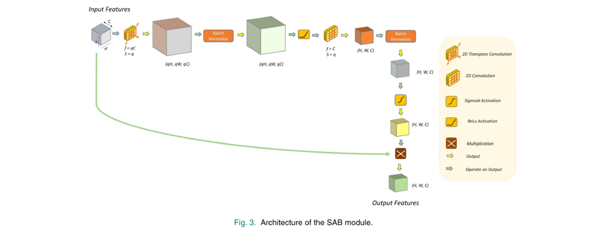

Method
Rather than treat a PCG spectrogram as an ordinary 3-channel color image and reuse a large pretrained vision backbone — the conventional approach — SpectroCardioNet treats it as a single-channel 2-D signal and builds a compact, purpose-built network around it, trained from scratch.

Triple Spectro-Temporal Transformer (TSTT)
The raw PCG signal is converted to a spectrogram via short-time Fourier transform (256-sample frames, 32ms overlap, at a resampled 2kHz rate — PCG spectral content lives almost entirely below 500Hz). Delta and double-delta spectrograms are then derived to capture how the frequency content changes over time, giving a 3-channel, 2-D input analogous to how delta/delta-delta features are used in speech recognition.
Spectral Attention Block (SAB)
The spectrogram is expanded via transposed convolution, normalized, passed through a convolution that restores the original size, and squashed through a sigmoid into a soft [0,1] mask — upweighting diagnostically relevant time-frequency regions and downweighting the rest. This mask is then multiplied element-wise back onto the original input before further processing.

Spectral & Sequential Pattern Detectors
The SAB’s output passes through two Spectral Pattern Detector (SpPD) blocks — ordinary 2-D convolution, batch normalization, and ReLU — that extract spatial time-frequency correlations, finishing with global average pooling into a 1-D feature vector. In parallel, the sequential feature path runs the un-attended triple-spectrogram through four 1-D Sequential Pattern Detector (SePD) blocks (1-D convolution along the time axis), capturing how frequency-domain features evolve over time. The two resulting feature vectors are concatenated and passed through a fully-connected layer to produce the disease class prediction.